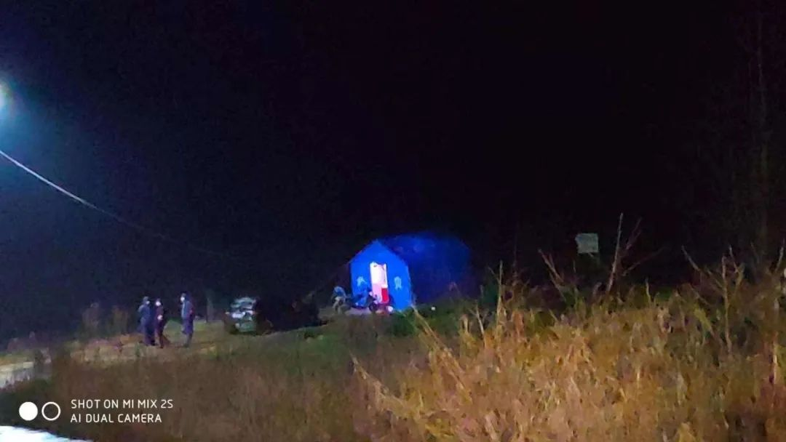
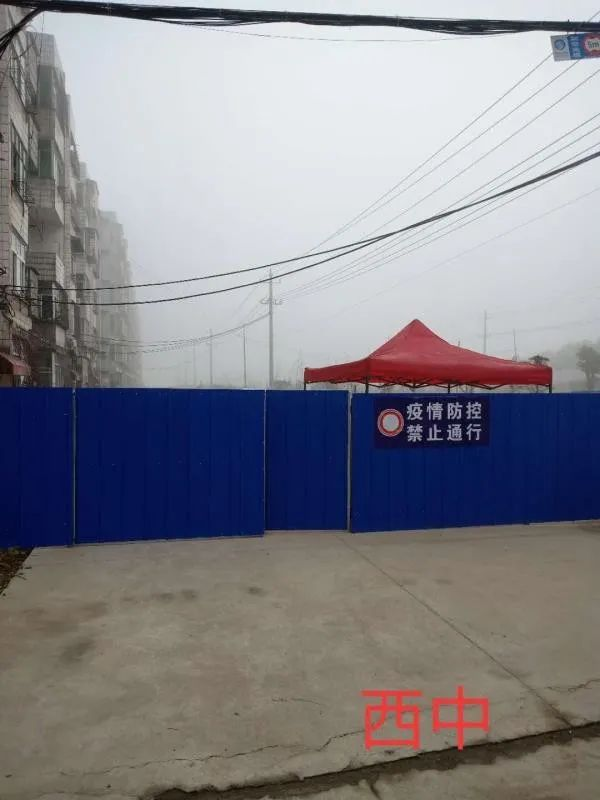
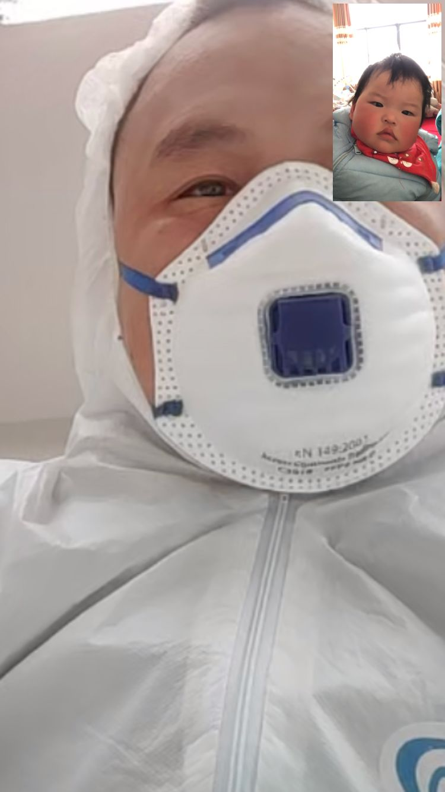
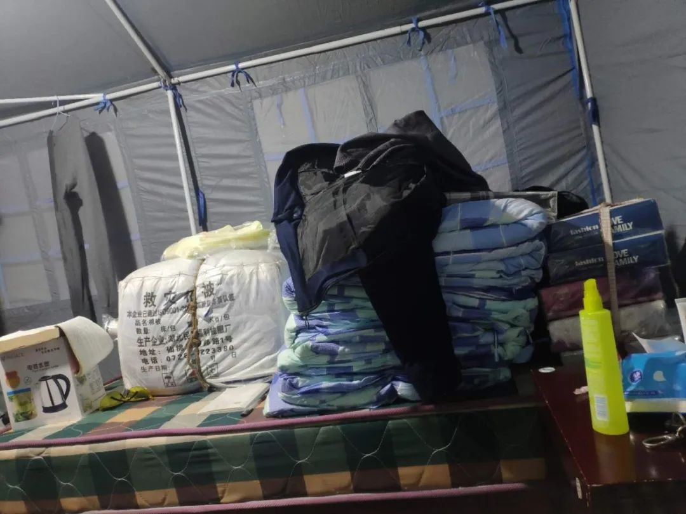
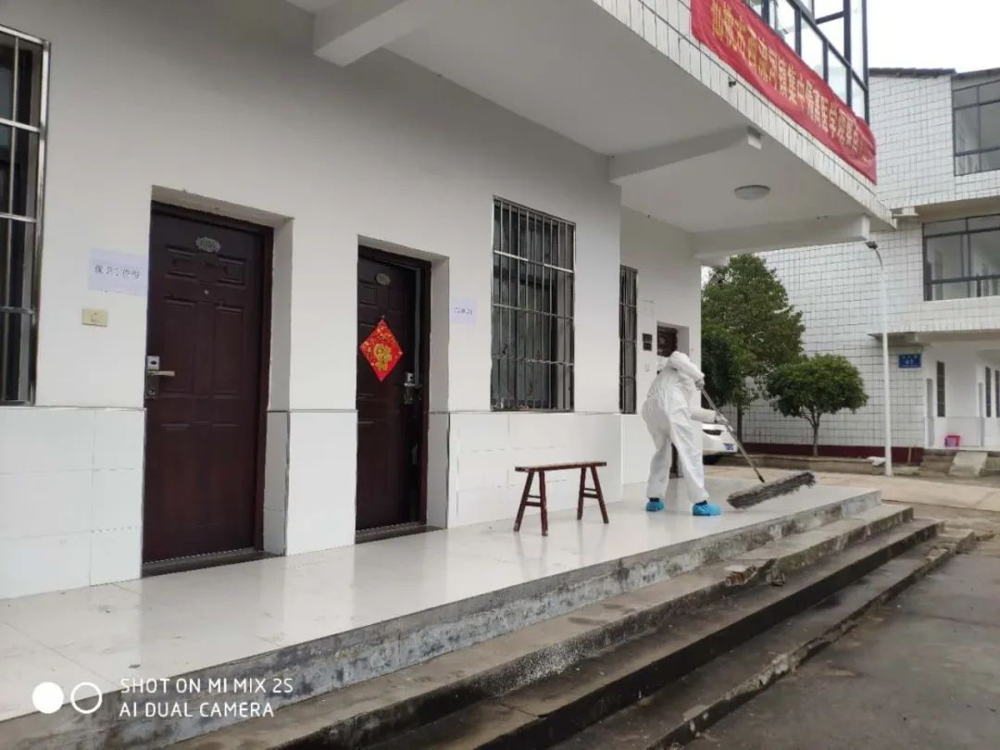
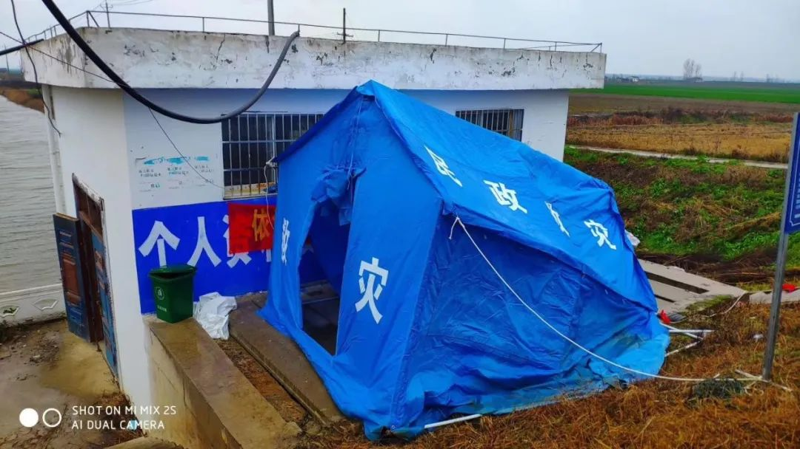
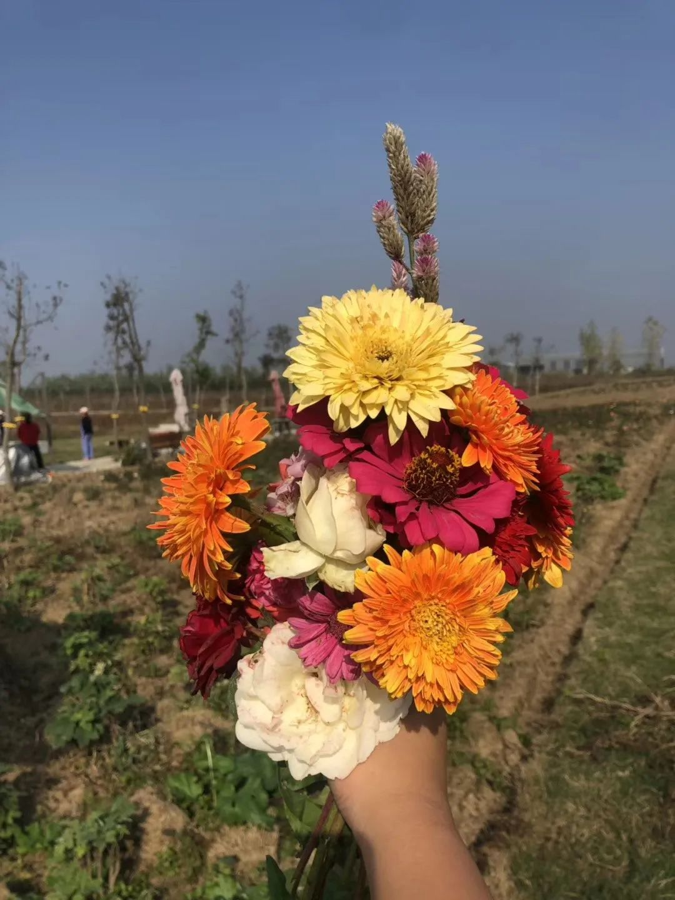

这个6岁上海小囡，用画笔成为战疫后方“小记者”！
原文链接 备份链接 小舅婆在战“疫”前线战斗，有有做了战地后方的“小记者”。画画内容的变化也悄然诉说着疫情的变化。 编者按 当很多小朋友把寒假过得快腻味的时候，有个叫有有的小朋友，却找到了一件有趣的持之以恒的事情——画抗疫漫画。 有有，大 …
呼吁大家，为了我们这个历经磨难的国家，为了我们这群保家卫国的无名氏，为了在一线奋斗的各个方面的人们，再安心宅在家里一段时间吧，这样之前的付出才有意义！
口述 | 亚 楠（化名）
整理 | 陈 冰

我和老公都是湖北仙桃人。平常我在武汉，老公在仙桃西流河镇上班。两地间隔不远，也就一百来公里。
1月19日，我带着8个月大的双胞胎女儿从武汉回到仙桃农村婆婆家。1月23日，武汉下令封城，还来不及反应，我老公的领导就打电话过来了，取消春节假期，随时在岗。我们这时才意识到事情的严重性。

仙桃西流河镇上的好多路都封了，现在开始集中采购生活用品，分发到户

一线的基层干部蹲守在道口，晚上就睡在帐篷里
全家人都在咳嗽
更糟糕的是，回来的第二天（1月20日），我开始高烧、咳嗽、浑身无力。我害怕极了，到乡镇医院要求检查是不是新冠肺炎。但当时整个湖北都是乱的，特别是乡镇这块，根本就没有重视起来，也没有核酸检测，医生说他们也没办法。后来在我的强烈要求下，医院给我拍了胸片，还验了血，确认我不是新冠肺炎，吊着的一颗心才终于放下来。
我病了4天以后，接着孩子又开始生病。8个月大的双胞胎女儿先后开始咳嗽，二宝还有过敏性哮喘，感觉每一天都如履薄冰，简直是熬身又熬心。
终于，孩子不咳嗽了，天气转晴了，婆婆又开始咳嗽了……
老公去一线照顾隔离病人
老公隔离期满了，领导让他上一线。我一直以为他去办公室搞统计工作的。2月1日，他走的那天，我因为孩子的问题，都没给他个好脸色，也没好好抱他一下，没有跟他说一声“加油”……
没想到，老公一去就接到了上一线照顾隔离病人的通知。老公是个退伍军人，一直有点英雄主义，做事雷厉风行的。接到通知，他马上就赶到了隔离点。

老公只能抽空和双胞胎女儿视频通话，虽然她们还不会说话
第一天视频，老公告诉我那里条件可以，单人宿舍，饭菜有鱼有肉有青菜，就是早上只有泡面，也不用担心和病人接触，基本没有被感染的风险。
第二天视频，老公没接，晚上回视频说去给隔离点的房间消毒了！我心想，不是说了不接触病人的吗？怎么还去消毒？
第三天视频，依然没接。晚上回来电话说接到消息，明天要来好几个隔离的人，要开始搭帐篷了。一直以为是给隔离的人搭帐篷，没想到第四天给我发了一段视频说，他要开始在帐篷里睡觉了，我瞬间泪如雨下……

帐篷里的设施一开始比较简陋

目前老公住的帐篷，条件好多了
农村基层工作不好做
农村的基层工作不好做，临时辟出来的镇政府和卫生院作为隔离点，设施简陋，现在隔离了30多个人员，老公负责协调他们的吃住问题。

西流河镇集中隔离医学观察点，工作人员在消毒
前几天，援建雷神山的人回来了，镇政府需要他们居家隔离，但是村里不同意，没办法，他们也被送到了我老公所在的隔离点了。说来凑巧，有几个人还都是我家亲戚。
老公每天遇到的挑战也很大——有一家，姐姐新冠肺炎去世了，弟弟在隔离点没几天自己也出现了胸闷气短的症状，被送到医院了。前几天，核酸检测又查出来4个……
当然，也有不少暖心时刻——有个五岁的小孩因为很感激我老公他们的照顾，画画送给他们。

风大的日子，帐篷都被刮倒了
虽然立春了，湖北还下着绵绵细雨，气温时低时高，这样的天气最容易感冒，我不知道说什么好，只能不停地跟老公说注意安全，注意保暖，注意消毒——手机消毒，手消毒，衣服消毒，除了这些我还能说什么呢？
我们这边的政府还是很负责任的，整个乡镇控制的情况还是比较好的。
盼望老公下个月健康回来过30岁生日
老公离开的第五天，大宝又有点咳嗽了，一晚上都在闹腾，我整夜整夜没法睡觉，忍着不给他打电话，我知道老公也无能为力。我只能网上问医生。
幸好老公早早地囤了一些药在家里，我一直是个乐观积极的人，可是现在，夜深人静的时候，我真的很恐惧，害怕孩子生病，害怕老公被传染。思绪万千……
想到跟老公认识、恋爱、结婚到现在有孩子，他一直是一个对工作兢兢业业的人。无论在哪个岗位，都能很好地完成各项任务，家里各种表扬证书一大堆。但是说我心里没有怨气是假的。
跟老公结婚的时候，他没休婚假就返岗了。好不容易等到十一放假，和他出去旅游，第三天游西湖的时候，他接到紧急电话连夜赶回了工作岗位。
去年怀孕到晚期的时候，因为双胎宝宝胎心不稳，我身体的凝血功能不好，随时有血栓的风险，医生建议赶紧剖腹产。老公在我要生孩子的头一天才到我身边，第二天生完孩子，宝宝们被送进温箱，我还来不及看一眼，他又赶着回去做扶贫工作。
然而，此时此刻，看着老公发过来的视频，真的心疼加担心。再多的抱怨化为乌有——只要你平平安安，早点回家。我们已经有1个多月没见面了，虽然你工作的地方离我们不过20分钟的车程。
呼吁大家，停下你们躁动不安的心，停下你们无处安放的脚，为了我们这个历经磨难的国家，为了我们这群保家卫国的无名氏，为了在一线奋斗的各个方面的人们，再安心宅在家里一段时间吧，这样他们的付出才有意义！

老公下个月30岁生日，他曾答应我要回来一起过的，一家四口欢聚一堂。这是我们春天的约定，老公你一定要遵守哦！

征集令
《新民周刊》现面向全国征集新冠肺炎采访对象和真实故事：
如果你是参与抗击新冠肺炎疫情的医护人员或其家属，我们希望聆听你的“战疫”故事，也希望传达你的诉求。
如果你是确诊、疑似患者本人或家属，我们希望了解你和家人如何“抗疫”的过程，让外界了解你的真实经历。
如果你是疫情严重地区的普通市民，我们希望展现你的乐观，并倾听你所需的帮助。
如果你是公共服务人员或各类捐助者，我们希望看到你的“最美逆行”，记录下你的无私。
……
抗击新冠肺炎疫情，我们诚征对疫情了解的社会各界人士，提供相关线索，说出你的故事，让我们用新闻留存这一切。
《新民周刊》新冠肺炎线索征集值班编辑联系方式（添加时请简要自我介绍）：
周一：应 琛 微信号：paulineying0127
周二：金 姬 微信号：gepetta
周三：黄 祺 微信号：shewen-2020
周四：周 洁 微信号：asyouasyou
周五：孔冰欣 微信号：kbx875055141
周六：吴 雪 微信号：shyshine1105
周日：姜浩峰 微信号：jianggeladandong
✳如你需要捐赠物资，可与以下两位工作人员联系:王勇：WangYong-SH 吴轶君：rommy150708（添加时请注明“捐物资”，方便工作人员快速通过您的申请，谢谢。）
新闻是历史的底稿，你们是历史的见证者。期待你的故事、你的线索！

▼
大家还都在看这些
▼
新民周刊所有平台稿件， 未经正式授权
一律不得转载、出版、改编或进行
与新民周刊版权相关的其他行为，违者必究

原文链接 备份链接 小舅婆在战“疫”前线战斗，有有做了战地后方的“小记者”。画画内容的变化也悄然诉说着疫情的变化。 编者按 当很多小朋友把寒假过得快腻味的时候，有个叫有有的小朋友，却找到了一件有趣的持之以恒的事情——画抗疫漫画。 有有，大 …
原文链接 备份链接 我也是个普通人，也会恐惧。但我是一名医务工作者，同时是一名党员；我们黄冈的疫情是全国城市里除武汉之外最重的几个之一，这样的困难情况下，我们不去，谁去？必须要坚持，一定要挺住。 口述 | 陈 林 整理 | 王 煜 我是湖 …
原文链接 备份链接 记者/韩谦 魏晓涵 *编辑/石爱华宋建华* 进行病理解剖的刘良团队 经历了一个多月的等待后，华中科技大学同济医学院法医病理学教授刘良带领的团队，于2月16日凌晨3点50分，完成了第一例新冠肺炎死亡病例的尸体解剖。 截 …
原文链接 备份链接 【财新网】（记者 覃建行 见习记者 唐爱琳 实习记者 王颜玉）监狱系统新冠肺炎疫情“爆雷”数日后，2月25日，中央政法委长安剑公号披露：截至23日，湖北监狱系统现有在押人员确诊323人，这一数字较21日首次公布时增 …
原文链接 备份链接 随着初春季节的到来，流行性感冒也进入了高发期。而在新冠病毒肺炎疫情的影响下，钟南山院士日前公开呼吁：把流感和新冠肺炎两类病人区分开来是当务之急。 为何将流感和新冠肺炎区分开来如此重要？ 钟南山： 区分流感与新冠肺炎是 …